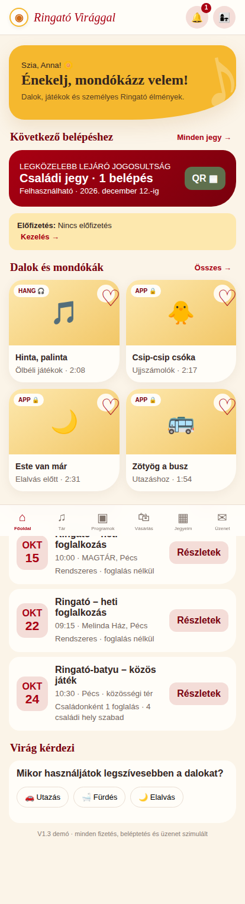
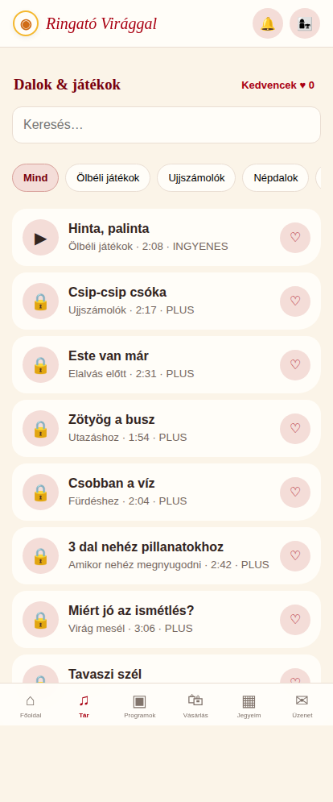
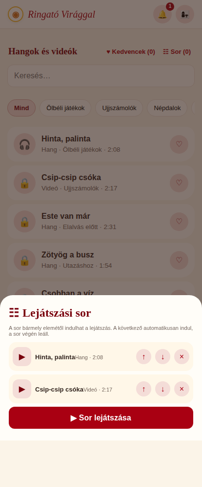
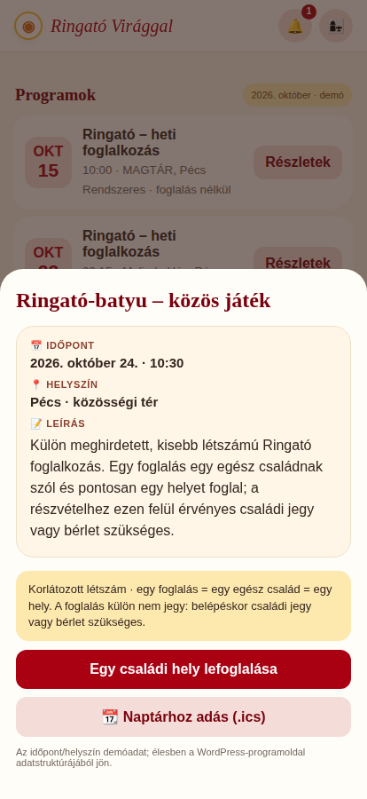
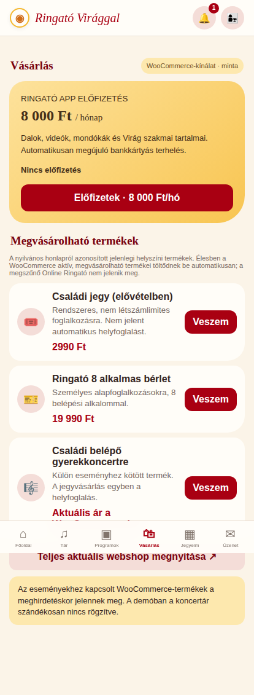
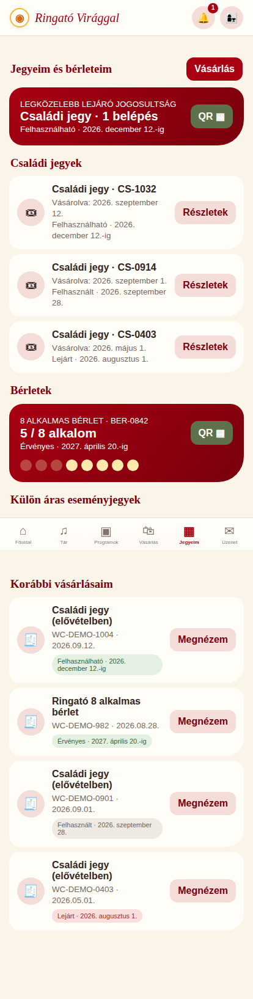
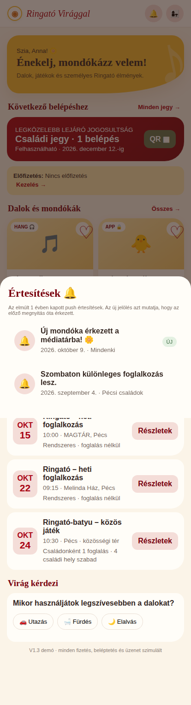
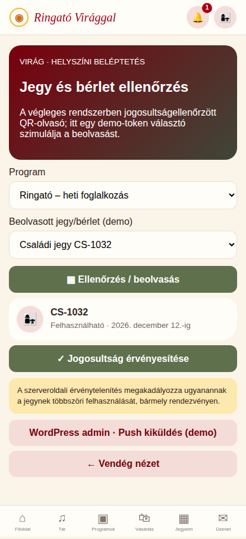

Hangok és videók
Dalok, mondókák, ölbéli játékok és Virág rövid videói, témák szerint. Egy részük ingyenes, a teljes médiatár előfizetéssel érhető el.
Így képzeljük el a Ringató Virággal új, telefonról alkalmazásszerűen használható felületét. Szeretnénk még a fejlesztés előtt megbizonyosodni arról, hogy valóban azt tervezzük, amit szeretnél.
Szia Virág! A célunk nem az, hogy újabb, külön kezelendő rendszert kapj, hanem hogy a mostani weboldalad és webáruházad mellé egy egyszerű, szerethető mobilos élmény kerüljön. A jelenlegi munkádat szeretnénk megőrizni, nem lecserélni.
A tervezett végleges működést foglaljuk össze. Az, hogy az első kiadásban pontosan mi és hogyan valósítható meg, a meglévő rendszer felmérése után derül ki.
Dalok, mondókák, ölbéli játékok és Virág rövid videói, témák szerint. Egy részük ingyenes, a teljes médiatár előfizetéssel érhető el.
A család elmentheti a kedvenceit, és tetszőleges sorrendbe rendezheti a felvételeket. A sor automatikusan továbblép a következő elemre.
Hanganyaghoz hang-, videóhoz teljes képernyős lejátszó. Az álló és fekvő videó a telefon mindkét tájolásában jól nézhető legyen.
A tervezett díj 8 000 Ft havonta, automatikus megújulással. A további terhelés lemondható, a már kifizetett időszak végéig hozzáféréssel.
A meglévő webáruház éppen megvásárolható termékei: családi jegyek, bérletek és külön eseményjegyek. A régi Online Ringató megszűnő kínálatát az új előfizetés váltaná fel.
Korábbi vásárlások és felhasználhatóság: a jegy aktív, felhasznált vagy lejárt-e; a bérleten hány alkalom maradt; QR bemutatása.
Időpont, helyszín, leírás, naptárhoz adás. A program részletei foglalás vagy vásárlás előtt és után is elérhetők.
A szülők közvetlenül írhatnak Virágnak. Lehetőleg gyors, akár azonnali üzenetváltás – ha a meglévő környezet ezt kényelmesen lehetővé teszi.
Virág választja ki a címzetteket és az üzenet szövegét; egyéneknek vagy saját csoportoknak küldhet. A szülő visszanézheti az elmúlt év értesítéseit, és rövid kérdésekre is válaszolhat.
A rendszeres, nem létszámlimites foglalkozásra a család érvényes családi jeggyel vagy bérlettel érkezhet. A részletek előre láthatók.
Egy foglalás pontosan egy családi helyet jelent, a gyermekek számától függetlenül. A foglalás mellett belépéskor családi jegy vagy bérlet szükséges.
A külön meghirdetett esemény saját árú webshopos jegyet kap. Sikeres vásárláskor a család helye is lefoglalt; a normál jegy és bérlet ide nem használható.
A programoknál mindig megnyithatók az időpont, helyszín, leírás és a naptárhoz adás lehetőségei – a foglalás vagy a jegyvásárlás után is.
Nem tervezünk külön, második adminrendszert. A mostani weboldalad kezelőfelületét szeretnénk használni és kiegészíteni, hogy ne kelljen ugyanazt kétszer rögzítened.
A technikai üzemeltetés nem a Te feladatod: a program javítását, összekötését és technikai frissítéseit külön fejlesztői/üzemeltetési feladatként egyeztetjük.
Nem szeretnénk újra felépíteni azt, ami már működik. A meglévő WordPress-weboldal és a webshop lehetőség szerint az új app mögött is ugyanazt az információt szolgáltatná.
Lehetőség szerint ugyanazzal a szülői fiókkal lehessen belépni a webáruházba és az appba.
Az appnak ne legyen külön termék- vagy vásárlási nyilvántartása; a mostani webshop legyen a kiindulópont.
Lehetőleg a most működő bankkártyás folyamatra építünk, de a havonta ismétlődő levonás lehetőségét külön ellenőrizzük.
A weboldalon már felvitt anyagokat és információkat, amennyiben alkalmasak rá, szeretnénk újrahasználni.
A napi adminisztráció maradjon ott, ahol Virág már most is dolgozik; az app ne jelentsen újabb külön adminrendszert.
Valódi képek a kattintható demóból. A funkciók és a felépítés irányát mutatják, nem a végleges grafikai kidolgozást. A képekre kattintva nagyíthatók.

A következő belépéshez ajánlott, leghamarabb lejáró használható jegy vagy bérlet kerül előre.
A kép a mostani demóból származik, nem végleges grafika.
Kereshető médiatár, kedvencek és lejátszási sor. A felvételek most csak minták.
A kép a mostani demóból származik, nem végleges grafika.
Sorrend változtatása, elindítás bármelyik elemtől, majd egymás után következő felvételek.
A kép a mostani demóból származik, nem végleges grafika.
Időpont, helyszín, leírás, naptárba mentés és – ahol kell – családonkénti foglalás.
A kép a mostani demóból származik, nem végleges grafika.
A meglévő termékek és az új 8 000 Ft-os app-előfizetés. A fizetés jelenleg nem valódi.
A kép a mostani demóból származik, nem végleges grafika.
Még használható, felhasznált vagy lejárt jegyek és a bérletek fennmaradó alkalmai.
A kép a mostani demóból származik, nem végleges grafika.
A felhasználóhoz érkezett push értesítések előzményei, az újakkal megjelölve.
A kép a mostani demóból származik, nem végleges grafika.
Telefonos jegy-/bérletellenőrzés, belépés rögzítése. Ma még szimuláció.
A kép a mostani demóból származik, nem végleges grafika.A fő képernyőtípusok, a programok háromféle működése, a jegyek és bérletek logikája, a kedvencek, a lejátszási sor és a havi előfizetés elképzelése.
A színek, betűk, ikonok, íves formák, arányok, fotók és apró grafikai részletek. A jelenlegi honlapod meleg sárga–bordó arculatát tovább elemezzük, és még közelebb hangoljuk hozzá az appot. Kisebb-nagyobb látványbeli hibákat is javítunk.
A próbafiók, a dalok és videók, dátumok, helyszínek, létszámok, vásárlások, üzenetek, értesítések és a QR-kódok. Nincs valódi fizetés, foglalás vagy értesítésküldés a demóban.
Összefoglalva: ez közös kiindulópont. Elég részletes az elképzelés megvitatásához, de nem kész végleges design, nem a teljesen működő éles rendszer.
A célunk a teljes felsorolt funkcionalitás, de nem szeretnénk előre megígérni olyasmit, aminek a megvalósíthatóságát még nem láttuk. A WordPress, a webshop és a jelenlegi szolgáltatások megismerésekor találkozhatunk olyan korláttal, amelynek feloldása aránytalanul nagy munka lenne.
Átolvasod, kipróbálod, és jelzed, mi tetszik vagy mi hiányzik.
Megnézzük, mire lehet biztonságosan építeni a már működő rendszerben.
Az éles oldaltól elkülönítve fejlesztünk és tesztelünk.
Csak az átnézett, működő funkciókat helyezzük éles használatba.
Különösen ilyen kérdés lehet az automatikus havi bankkártyás levonás, a régi jegyek és bérletek adatainak átvétele, az egyszer használható belépők, a videók védett lejátszása, a telefonos értesítések és az azonnali üzenetváltás.
Melyik felvételekkel és kategóriákkal induljunk? Mi legyen ingyenes?
Jól különül el a három programtípus? Van speciális foglalási vagy lemondási szabály?
Jó a családi jegy 3 hónapos és a bérlet első használattól számított 8 hónapos érvényessége? A régi vásárlásokkal mi történjen?
Milyen csoportokba érdemes sorolni a családokat? Mennyire fontos az azonnali chat az első változatban?
Mi tetszik a demóban, és mit hangoljunk közelebb a mostani honlaphoz?
Ennek a dokumentumnak a jóváhagyása az elképzelés irányára és a funkciók értelmezésére vonatkozik. Nem jelenti a végleges design, a fejlesztési ár vagy az összes technikai részlet jóváhagyását. Ezekről a felmérés után egyeztetünk.
A válasz nem kerül automatikusan elküldésre vagy elmentésre. Másolás után illeszd be egy e-mailbe vagy üzenetbe, és küldd el nekünk. A jóváhagyás akkor tekinthető megérkezettnek, ha ezt meg is kaptuk.